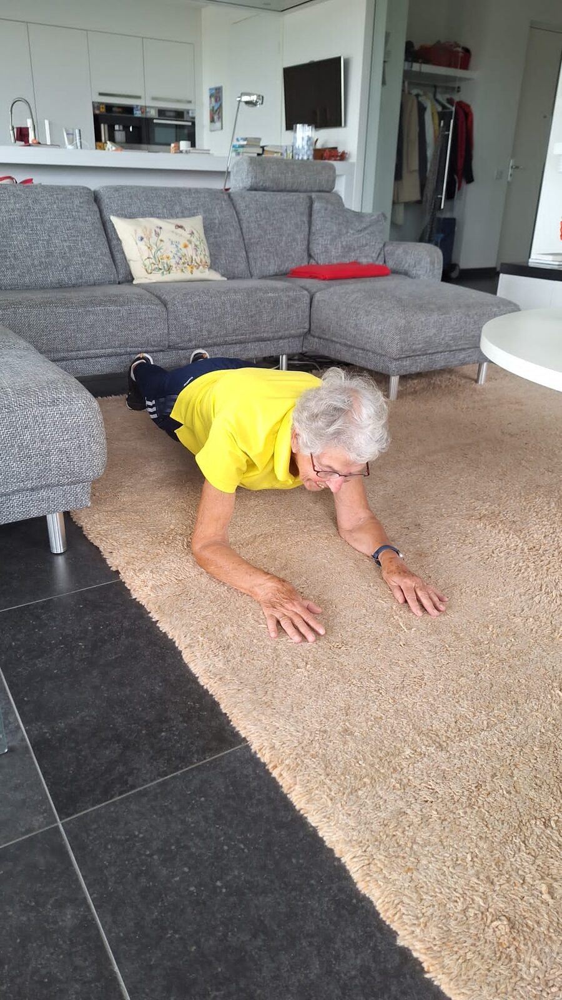

Werk, kinderen, huishouden, sociale verplichtingen: veel moeders staan de hele dag 'aan' voor iedereen behalve zichzelf. Sporten belandt dan onderaan het lijstje, vaak met een flinke dosis schuldgevoel zodra je wél iets voor jezelf doet. Tijd om dat om te draaien.

Me-time is geen egoïsme
Een lege accu laadt niemand op. Moeders die structureel tijd voor zichzelf nemen, hebben meer energie, meer geduld en een beter humeur, en daar profiteert het hele gezin van. Beweging is daarbij dubbel effectief: het is me-time én het maakt je fysiek en mentaal sterker. Zie je wekelijkse sportmoment dus niet als iets dat je van je gezin afpakt, maar als onderhoud waar iedereen beter van wordt.
Waarom het er toch niet van komt
- Sportschooltijden passen niet op gebroken avonden en oppasroosters
- Reistijd maakt van een uurtje sporten al snel twee uur
- Aan het einde van de dag is de motivatie op
- Zonder afspraak is afzeggen (tegen jezelf) te makkelijk
Zo maak je het wél haalbaar
- Plan het als een afspraak. Zet je sportmoment in de gezinsagenda, net als een tandartsafspraak. Wat gepland staat, gebeurt.
- Breng de sport naar huis. Personal training aan huis schrapt reistijd en oppasgedoe: je traint in je woonkamer, tuin of het park om de hoek, desnoods terwijl de baby slaapt.
- Kies het juiste moment. Vroeg in de ochtend, tijdens een thuiswerklunch of juist in het weekend: kies het moment waarop je energie het hoogst is, niet het moment dat 'overblijft'.
- Maak het sociaal. Samen trainen met je partner, zus of vriendin maakt het gezelliger én verplichtender. Bij veel aanbieders traint een tweede persoon gratis mee.
- Begin klein. Eén vast uur per week is oneindig veel beter dan een ambitieus plan dat na twee weken sneuvelt.
Trainen waar en wanneer jij wilt
De trainsters van LET'S DO IT Personal Training komen 7 dagen per week (06:30–22:00) met alle materialen naar je toe, speciaal vóór vrouwen dóór vrouwen, met onder meer specialisatie in trainen na een bevalling. Een sportmaatje traint gratis mee. Zo wordt me-time ineens heel praktisch.
Lees ook: fit blijven tijdens je zwangerschap.